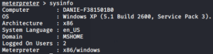
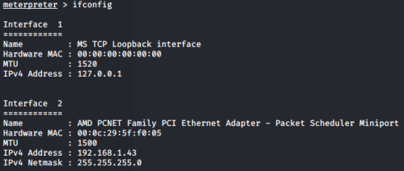
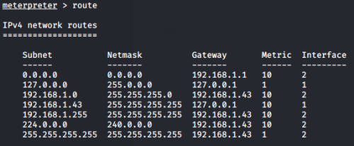

information gathering
Information Gathering with Meterpreter
sysinfo → information about the machine and the OS
ifconfig → network configuration in use
route → routing table of the compromised host
netstat → connection active on the machine
getuid → which user is running the process exploited by metasploit